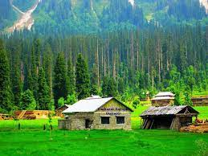
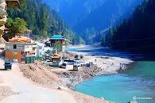

The district of Neelum (spelt also Neelam; Urdu: نیلم [niːləm]) is the northernmost of 10 districts located within the Pakistani-administered territory of Azad Kashmir. Taking up the larger part of the Neelam Valley.

Azad Jammu and Kashmir, abbreviated as AJK and colloquially referred to as simply Azad Kashmir, is a region administered by Pakistan as a nominally self-governing entity and constituting the western portion of the larger Kashmir region, which has been the subject of a dispute between India and Pakistan since 1947.

Sharda, also known as Shardi, is a small Tehsil in Neelam District in Azad Kashmir, Pakistan. It is one of the two tehsils of Neelum district, and is located on the banks of the Neelum river at an altitude of 1,981 metres.
